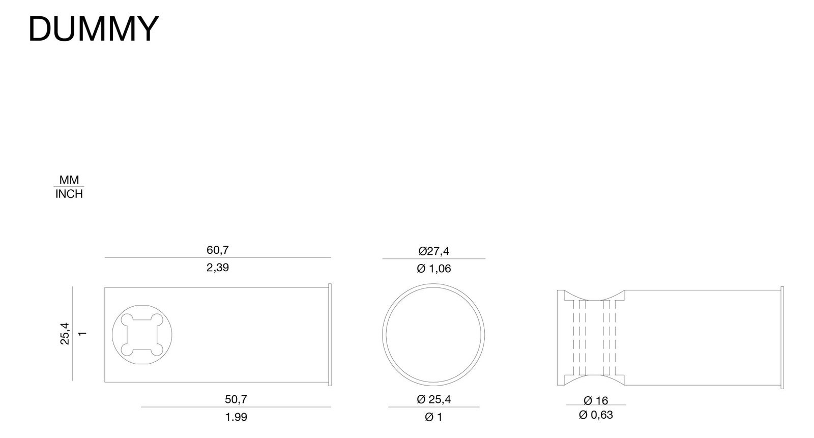
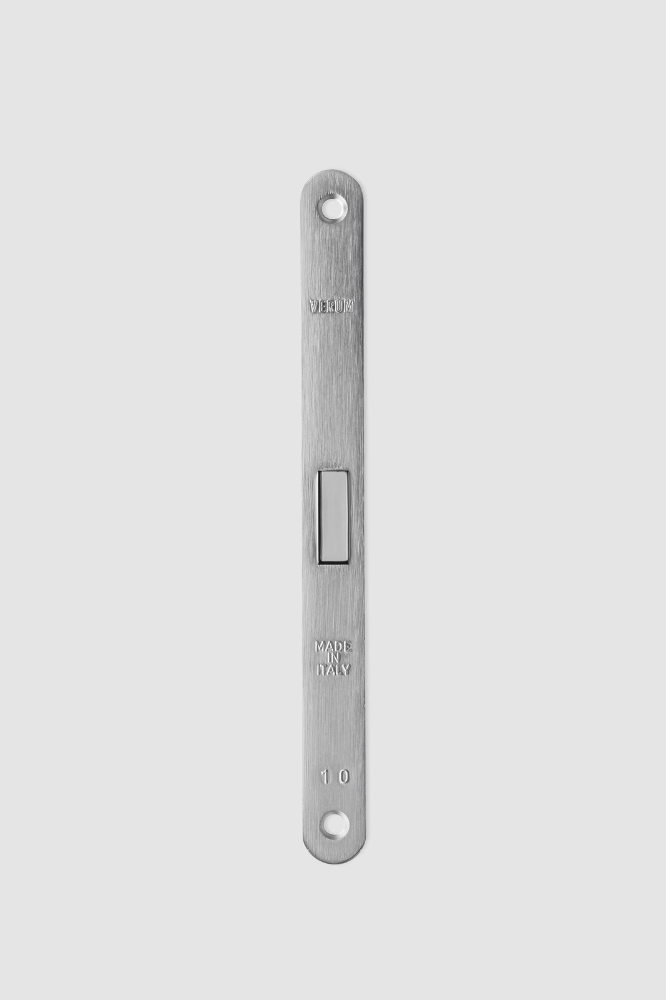
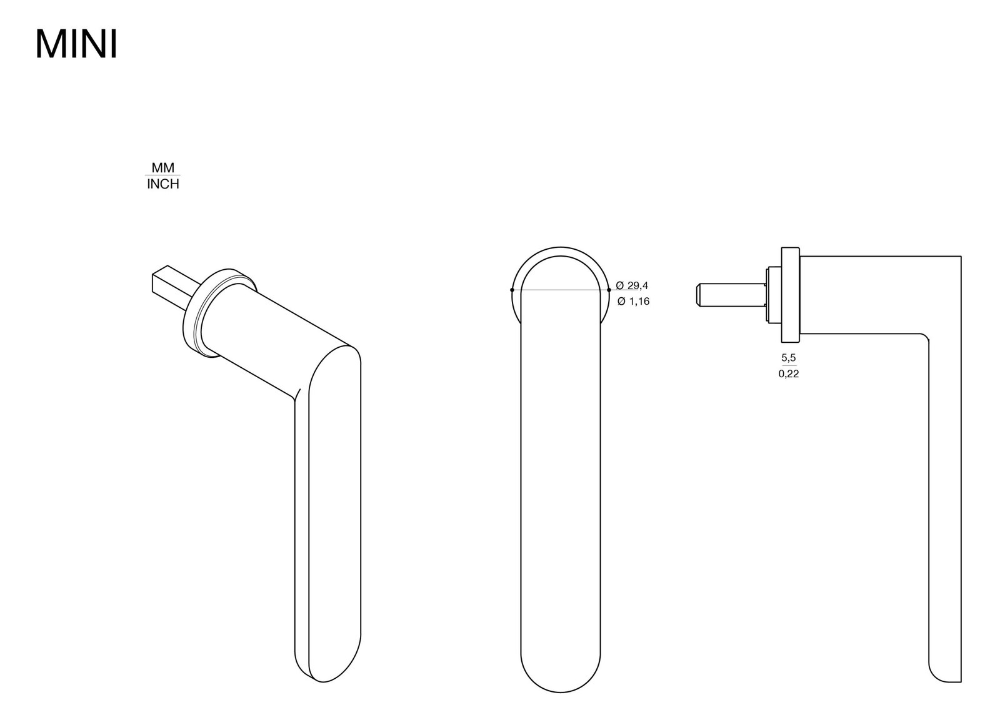
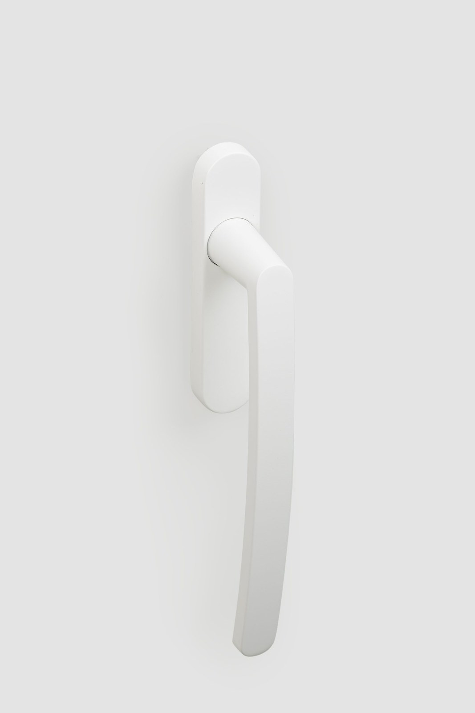

CREATURA
VERUM
18 / 21
Системы NUDA
Dummy · замки · окна

Dummy · Dummy Clever
Патентованный цилиндр для крепления ручки без замка; Clever держит дверь закрытой магнитом.
Для всех моделей Nuda

Замки
Магнитные и механические замки, ответные планки в отделках Nuda.
Made in Italy · UNI EN 12209

Оконные ручки
Любая модель Nuda — в оконной версии: механизм Mini DK Ø 29 мм или Slim 24 мм.
4 и 8 положений

Lift & Slide
Ручки для подъёмно-раздвижных дверей Round, Square и Mini.
Ниша, цилиндр, двойная